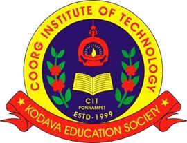
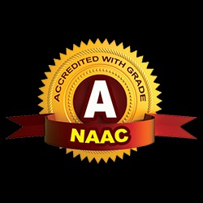
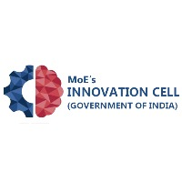
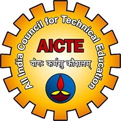

Coorg Institute of Technology
Ponnampet, Kodagu – Karnataka
Approved by AICTE
Affiliated to VTU
NAAC Accredited
IIC-Registered
Visit Official Website
IIC Regional Meet 2025
Every Student → Innovator, Leader, Achiever
Academic Year 2024-25